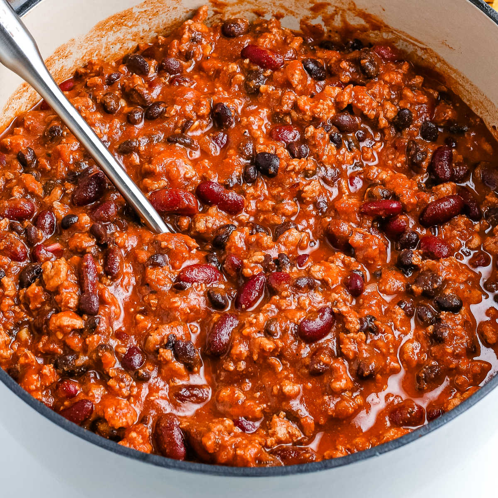

Turkey Chili

Description
A delicious, healthy and easy to make dinner. This chili uses ground turkey, beans and plenty
of spices which results in a tasy and filling meal. This is also a great meal to make ahead
and keep in the fridge for easy meals throughout the week.
Ingredients
- Ground Turkey
- Chicken Stock
- Onion
- Garlic
- Black Beans
- Kidney Beans
- Spices (Cayenne, Smoked Paprika, Chili Powder, etc.)
- Tomato Paste
Steps
- Chop onions and garlic.
- Sautee onions with tomato paste.
- Add in garlic and cook until fragrant.
- Add in ground turkey and cook until almost done.
- Add in spices. Toast spices briefly.
- Pour in small amount of chicken stock. It should be enough to deglaze
the bottom of the pan.
- Add in beans.
- Cover with more chick stock.
- Simmer until it reaches desired thickness.